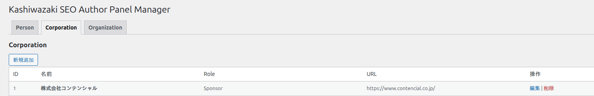
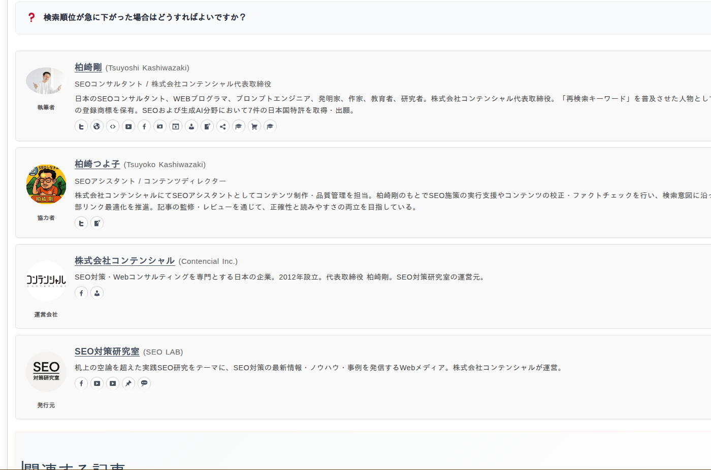

エンティティ管理・パネル表示
Person・Corporation・Organizationの3種類のエンティティの管理方法、5種類のパネルスタイル、ショートコード属性、Customモードの詳細について解説します。
Person管理
Personタブでは、著者や個人のエンティティ情報を管理します。登録された情報はSchema.orgのPersonスキーマとしてJSON-LDに変換されます。
Personフィールド一覧
| フィールド | 説明 |
|---|---|
| name | 著者の名前（日本語）。パネルおよびJSON-LDの name に使用されます。 |
| name_en | 著者の英語名。多言語対応やsameAsの識別に使用されます。 |
| role | 著者の役割（例：著者、編集者、監修者）。パネルに表示されます。 |
| job_title | 肩書き・職業。JSON-LDの jobTitle に出力されます。 |
| bio | 略歴・自己紹介文。パネルの説明欄に表示されます。 |
| image_url | プロフィール画像のURL。パネルおよびJSON-LDの image に使用されます。 |
| url | 著者の公式WebサイトURL。JSON-LDの url に出力されます。 |
| same_as | 外部プロフィールURL（SNS、Wikipediaなど）。改行区切りで複数指定。JSON-LDの sameAs 配列に出力されます。 |
| panel_style | パネルのデザインスタイル（default / dark / accent / minimal / card）。 |
エンティティの追加・編集・削除
Personタブで「新規追加」をクリックすると入力フォームが表示されます。必要なフィールドを入力して「保存」をクリックします。既存のエンティティは一覧から選択して編集・削除が可能です。
Corporation管理
Corporationタブでは、企業・法人のエンティティ情報を管理します。登録された情報はSchema.orgのOrganizationスキーマとしてJSON-LDに変換されます。

Corporationフィールド一覧
| フィールド | 説明 |
|---|---|
| name | 企業名（日本語）。パネルおよびJSON-LDの name に使用されます。 |
| name_en | 企業の英語名。 |
| role | 役割（例：運営会社、監修元、提携企業）。パネルに表示されます。 |
| description | 企業の説明文。パネルの説明欄に表示されます。 |
| url | 企業の公式WebサイトURL。JSON-LDの url に出力されます。 |
| logo_url | 企業ロゴのURL。JSON-LDの logo に出力されます。 |
| same_as | 外部プロフィールURL（SNS、コーポレートサイトなど）。改行区切りで複数指定。 |
| panel_style | パネルのデザインスタイル（default / dark / accent / minimal / card）。 |
Organization管理
Organizationタブでは、団体・機関・非営利組織などのエンティティ情報を管理します。フィールド構成はCorporationと同様です。用途に応じてCorporationとOrganizationを使い分けてください。
Organizationフィールド一覧
| フィールド | 説明 |
|---|---|
| name | 組織名（日本語）。パネルおよびJSON-LDの name に使用されます。 |
| name_en | 組織の英語名。 |
| role | 役割（例：監修機関、協力団体）。パネルに表示されます。 |
| description | 組織の説明文。パネルの説明欄に表示されます。 |
| url | 組織の公式WebサイトURL。JSON-LDの url に出力されます。 |
| logo_url | 組織ロゴのURL。JSON-LDの logo に出力されます。 |
| same_as | 外部プロフィールURL。改行区切りで複数指定。 |
| panel_style | パネルのデザインスタイル（default / dark / accent / minimal / card）。 |
パネルスタイル
5種類のパネルスタイルから、サイトのデザインに合ったスタイルを選択できます。スタイルは public/css/panel-style.css で定義されています。
| スタイル名 | 説明 |
|---|---|
| default | シンプルで汎用的なデザイン。多くのテーマと調和します。 |
| dark | ダークカラーベースのデザイン。暗めのテーマや強いコントラストが必要な場合に適しています。 |
| accent | アクセントカラーを使用したデザイン。パネルを目立たせたい場合に適しています。 |
| minimal | 装飾を最小限に抑えたデザイン。コンテンツに溶け込むレイアウトです。 |
| card | カード型のデザイン。影や角丸を活用した現代的なUIです。 |
フロントエンド表示例

ショートコード属性一覧
ショートコード [author_panel] で使用可能な属性の一覧です。
| 属性 | 説明 |
|---|---|
| persons | 表示するPersonエンティティのID。カンマ区切りで複数指定可。例: persons="1,3" |
| corporations | 表示するCorporationエンティティのID。カンマ区切りで複数指定可。例: corporations="2" |
| organizations | 表示するOrganizationエンティティのID。カンマ区切りで複数指定可。例: organizations="1,2" |
| mode | 出力モード。standard（自己完結型JSON-LD）または custom（既存スキーマ連携）。デフォルト: standard |
| target_schema_id | Customモード時にリンクする既存スキーマの@id。例: target_schema_id="#article" |
| labels | パネルに表示するラベルテキスト。エンティティの役割表示をカスタマイズできます。 |
使用例
<!-- Standardモード：Person ID=1 を表示 -->
[author_panel persons="1" mode="standard"]
<!-- 複数エンティティを同時表示 -->
[author_panel persons="1,2" corporations="1" mode="standard"]
<!-- Customモード：既存のArticleスキーマにリンク -->
[author_panel persons="1" mode="custom" target_schema_id="#article"]Customモードの詳細
Customモードは、ページ上に既に出力されているArticle・NewsArticle・WebPageなどのスキーマの author プロパティに、本プラグインのエンティティ情報を連携させるモードです。
Customモードの仕組み
他のSEOプラグイン等がArticleスキーマをJSON-LDで出力しているページを用意します。
ショートコードまたはGutenbergブロックで mode="custom" を指定し、target_schema_id にリンク先スキーマの @id を設定します。
プラグインはJSON-LDの author プロパティに @id 参照を出力し、既存スキーマとエンティティ情報をリンクさせます。
Customモードでは、リンク先のスキーマが同一ページ上にJSON-LDとして出力されている必要があります。対象スキーマが存在しない場合、author参照は機能しません。
Standardモードで十分な場合がほとんどです。他のSEOプラグインとの連携が必要な場合にのみCustomモードを使用してください。